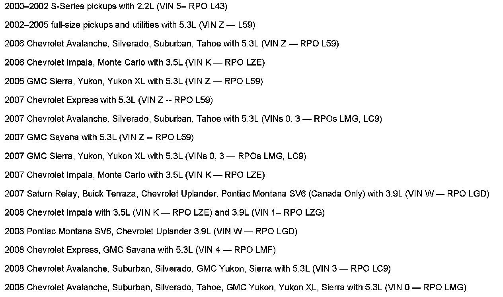

Fuel System - E85 Fuel Usage Precaution
Bulletin No.: 06-06-04-035ADate: February 05, 2008
INFORMATION
Subject:
Use of E85 Fuels in Vehicles Not Certified by GM as being FlexFuel Compatible / Aftermarket Conversion of Vehicles to Operate on E85 Fuels
Models:
2008 and Prior GM Passenger Cars and Trucks NOT FlexFuel (E85) Compatible (including Saturn)
2008 and Prior HUMMER H2, H3
2005-2008 Saab 9-7X
Supercede:
This bulletin is being revised to add model years. Please discard Corporate Bulletin Number 06-06-04-035 (Section 06 - Engine/Propulsion System).
Aftermarket Conversions of Vehicles to Use E85 Fuels
General Motors has become aware of several companies that claim to be able to convert vehicles equipped with gasoline engines to be compatible with E85 Fuels.
Vehicles certified by GM as being FlexFuel (E85) compatible contain numerous calibration and component differences that are not conducive to an aftermarket retrofit.
General Motors DOES NOT support or endorse conversions that may alter the emissions and related emissions components of its vehicles.
Repairs that may result from changes to GM built components and repairs that result from the use of improper fuel such as the use of gasoline containing more than 10% Ethanol in a non-FlexFuel certified vehicle are not covered under the terms of the New Vehicle Warranty.
E85 Compatible Vehicles

The only E85 compatible vehicles produced by General Motors are shown above.

Disclaimer